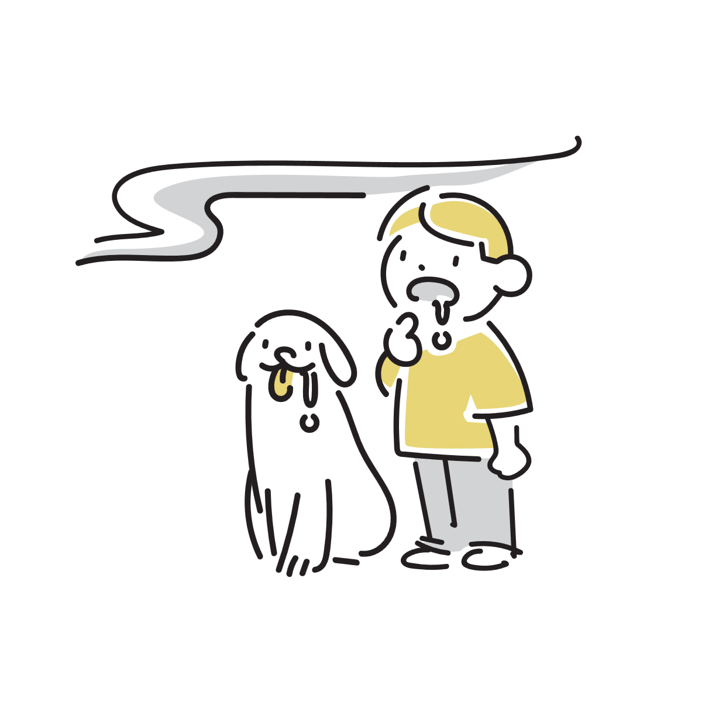

そこにないはずのにおいを感じることがあるのはなぜか
ふとした瞬間に、「焦げたにおいがする」「タバコのにおいがした気がする」と感じることがあります。 周囲を確認しても原因が見つからない場合がありますが、そこには嗅覚と脳の複雑な働きが関係していると考えられています。

においは「鼻だけ」で感じているわけではない
視覚や聴覚と同じように、嗅覚も脳が情報を解釈して成立しています。
鼻は空気中の化学物質を感知していますが、「何のにおいか」を最終的に判断しているのは脳です。
そのため、実際の刺激が弱かったり曖昧だったりすると、脳は過去の経験や周囲の状況から「たぶんこれだろう」と推測することがあります。
つまり嗅覚は、単純にセンサーが反応しているだけではなく、「予測しながら認識している感覚」でもあります。
記憶とにおいは強く結びついている
においは、記憶や感情と特に結びつきやすい感覚として知られています。
たとえば、昔の家のにおいや、学校、雨の日、特定の店の空気感などを、においと一緒に覚えている人は少なくありません。
そのため、似た環境や雰囲気に触れるだけで、脳が過去のにおい記憶を呼び起こすことがあります。
実際にはにおいが存在しなくても、「あのにおいがした気がする」と感じる場合があるのです。
これは幻覚というより、脳が記憶を補完している状態に近いと考えるとイメージしやすくなります。
疲労や集中状態で起こることもある
疲れているときや睡眠不足のときは、感覚処理のバランスが変化することがあります。
その結果、普段なら気にならない微弱な刺激を強く意識したり、曖昧な感覚を「におい」として認識したりする場合があります。
静かな環境では脳が補完しやすくなる
特に静かな場所では、脳は不足した情報を補おうとする傾向があります。
そのため、「本当ににおったのか」「気のせいなのか」が曖昧な感覚として現れることがあります。
ストレスや緊張が影響する場合もある
人は不安や緊張が強いとき、周囲の異常に敏感になりやすくなります。
焦げ臭さやガスのにおいのような「危険を連想しやすいにおい」を意識しやすいのも、その一例です。
これは脳が安全確認を優先している状態とも考えられます。
本当に微弱なにおいを拾っている場合もある
「他の人は感じていない＝存在しない」とは限りません。
においへの敏感さには個人差があり、ごく弱い刺激を先に感じ取る人もいます。
空調、衣類、家具、遠くの煙、湿気など、原因が非常に小さい場合もあります。
また、においは空気の流れによって一瞬だけ届くこともあるため、「一瞬だけ感じて消えた」という現象も起こります。
「全部気のせい」とは限らない
実際の刺激と、脳の補完の両方が混ざっているケースもあります。
嗅覚は特に曖昧な感覚であるため、「少し感じたもの」を脳が意味づけしている場合があります。
嗅覚は他の感覚より曖昧になりやすい
視覚には形があり、聴覚には方向があります。
一方で、においは境界が曖昧で、「どこから来たか」がわかりにくい感覚です。
そのため脳は、少ない情報から意味を推測する場面が増えます。
さらに嗅覚は慣れやすく、同じにおいを長時間感じ続けると認識が弱まる特徴もあります。
逆に言えば、脳の状態によって感じ方が変化しやすい感覚でもあります。
「確かににおった気がするけど、自信はない」という独特の曖昧さは、嗅覚そのものの性質とも関係しています。
多くは日常的な範囲の現象
こうした「ないはずのにおい」を感じる体験は、多くの場合、日常的な範囲で起こるものです。
疲労、記憶、周囲の空気、注意状態など、さまざまな要素が重なって発生している可能性があります。
ただし、強い症状が続いたり、体調不良や頭痛などを伴う場合には、別の原因が関係していることもあります。
大切なのは、「全部気のせい」と決めつけることでも、「必ず異常だ」と不安になることでもありません。
嗅覚は、思っている以上に脳の影響を受けやすい感覚なのかもしれません。
参考情報と注意点
一時的な違和感は珍しいものではありませんが、強い症状が長く続く場合や体調変化を伴う場合には、医療機関への相談も検討してください。
関連アイテム
 | 価格:19550円〜 |